Make the system alive, not merely polished.
This board pairs current G2.1 weaknesses with external mechanisms and real Brazilian energy imagery. It is an internal research artifact. External reference screenshots are not production assets.
Copy mechanisms, not expression.
Use shared-element continuity, scale, material hierarchy, cinematic pacing, scroll choreography, interaction patterns, and provenance logic. Do not trace layouts, ship reference screenshots, copy logos, or inherit another brand's visual identity.
reality -> evidence -> context -> contradiction -> understanding
What must get better
These are problem targets. Preserve the strong structural decisions, but do not use their current craft as the ceiling.
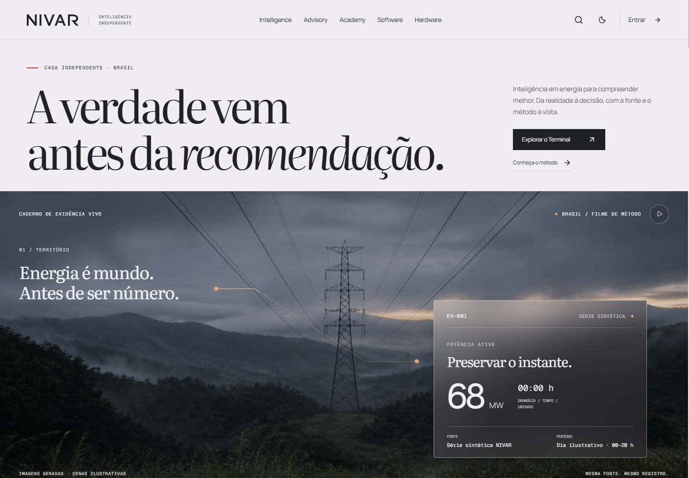
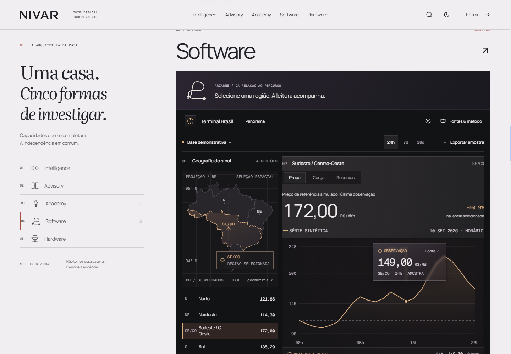
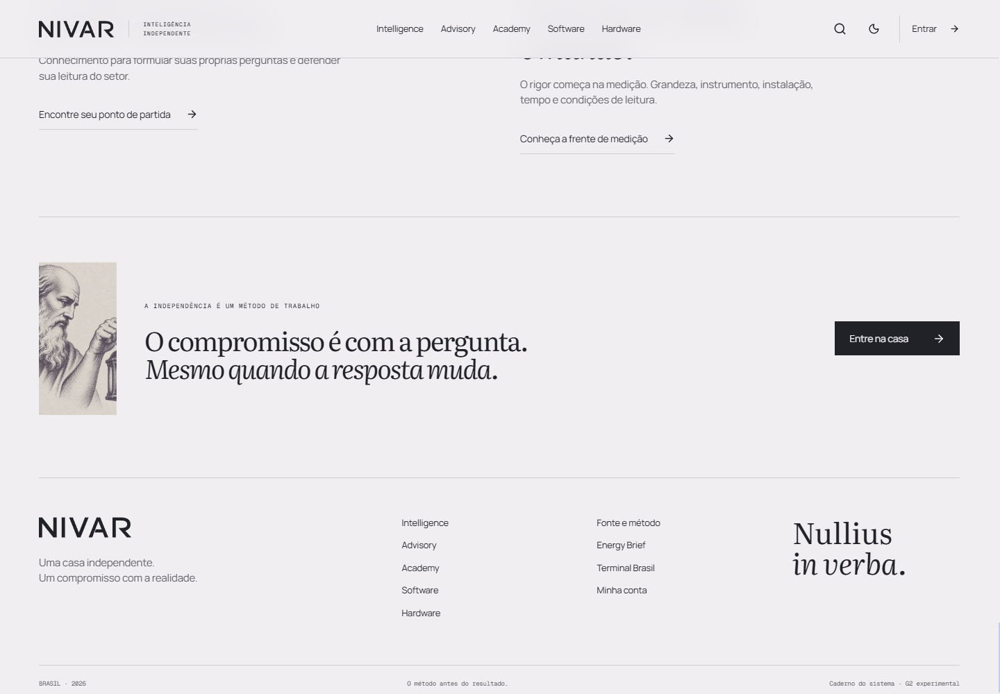
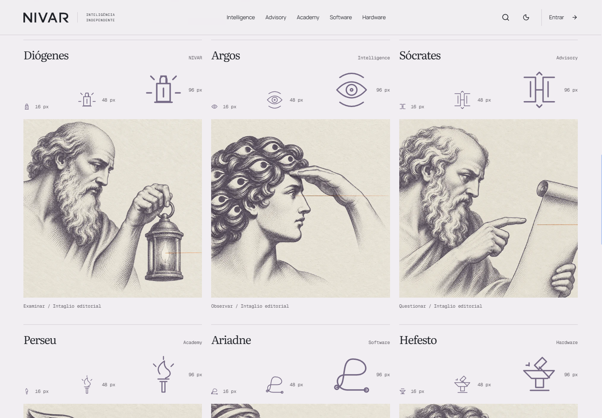
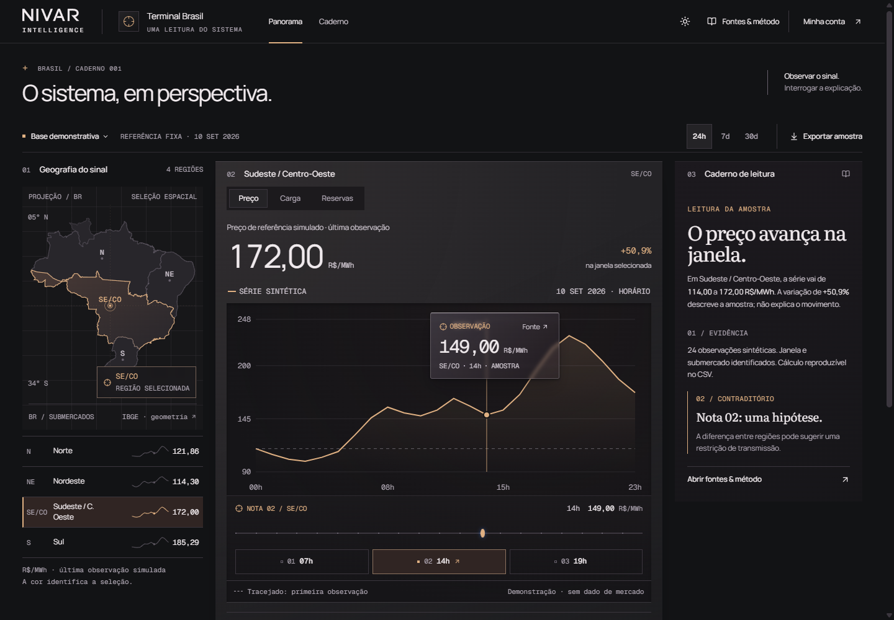
Visual mechanisms already studied
Captured during G2.1 research. Reference only. Do not ship, trace, or crop into product.
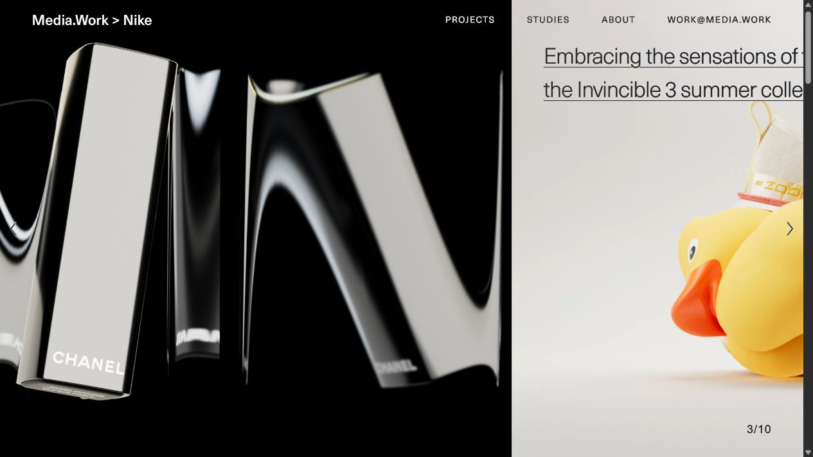
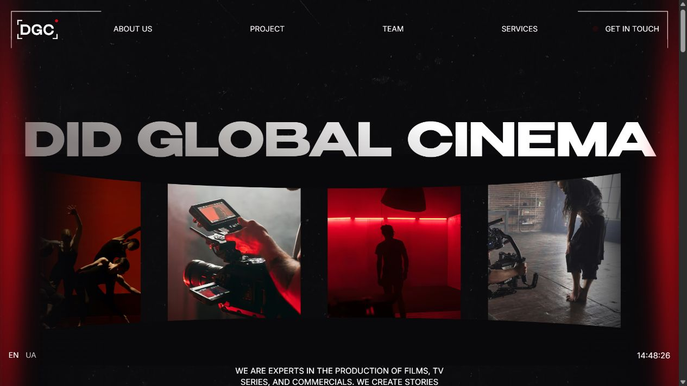

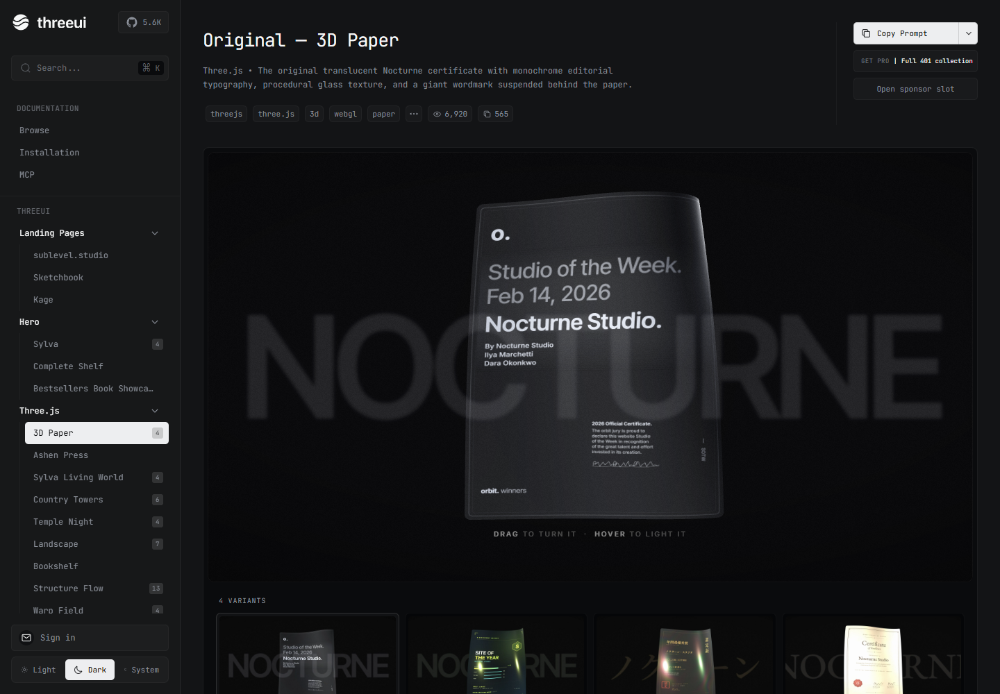
Replace generic territory with real energy geography
Images below are loaded remotely from Wikimedia Commons when internet is available. Review the linked license page and attribution requirements before production use.

{kind=link}

{kind=link}

_(2).jpg){kind=link}

{kind=link}

{kind=link}
Qualities NIVAR already decided it wants
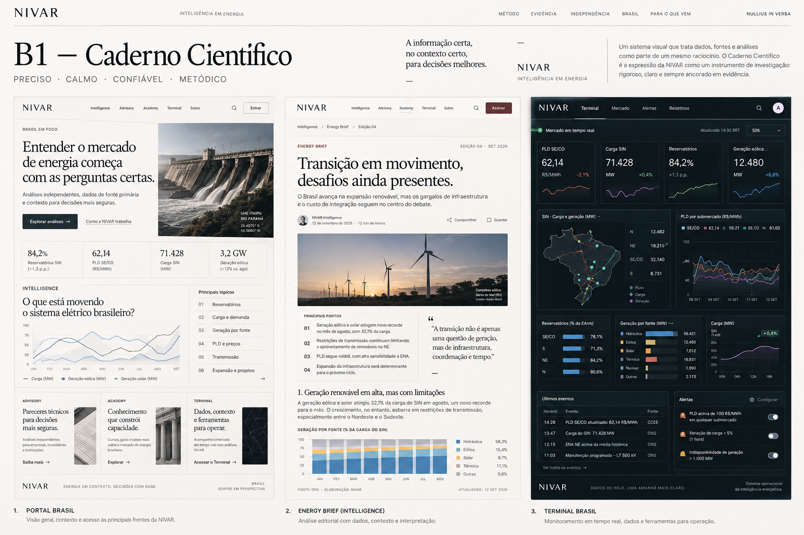
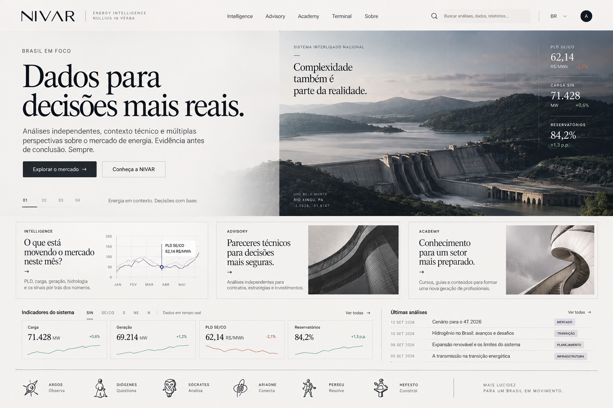
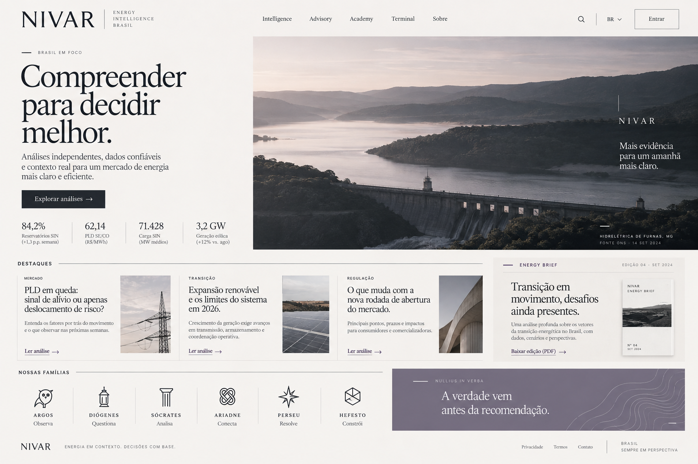
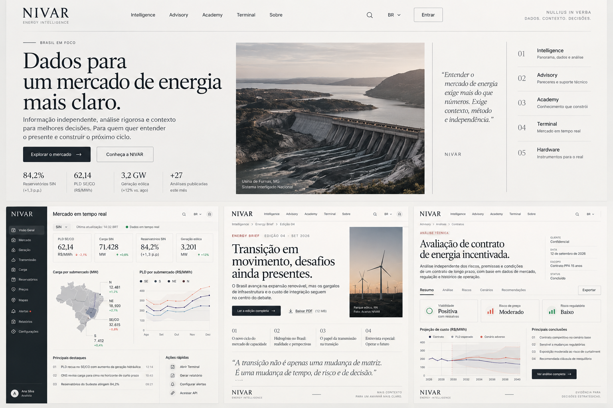
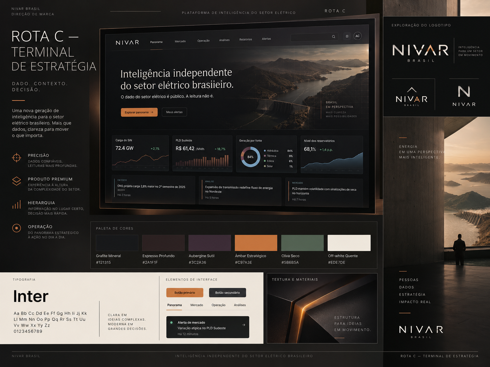
Attack the weak points with specific behaviors
Current: clip + finished panel.
Target: physical world -> datum -> unit/time -> gaps -> chart -> contradiction -> reading.
Current: Terminal exposed.
Target: one path survives region -> relation -> chart -> source -> full instrument.
Current: utility SVGs asked to carry identity.
Target: character + gesture + object + material + motion grammar.
Current: cropped editorial fragment.
Target: final revealing act gathers the five family capabilities.
Current: strong still, weaker temporal desire.
Target: selection propagates and charts/context morph without fake live behavior.
Current: too much generated generic terrain.
Target: factual geography and licensed real infrastructure wherever place matters.